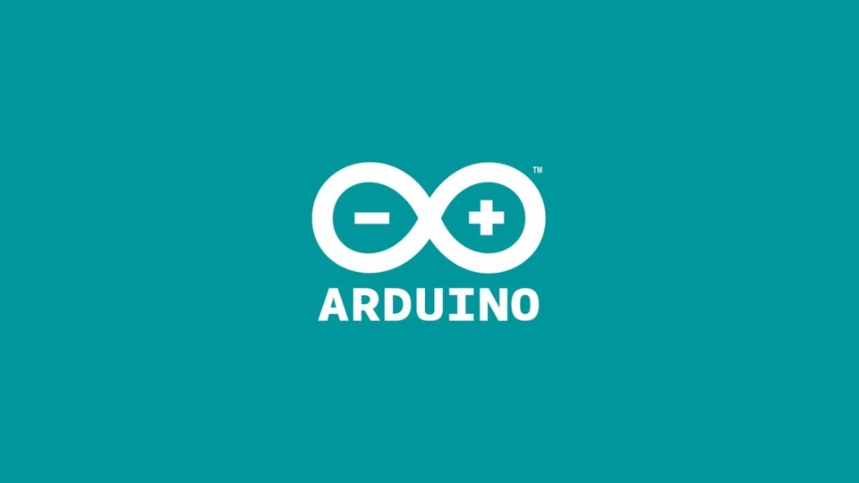

Skills
Max/MSP

Max/MSP/Jitter is a visual programming language providing the utility to edit sound, image, and most other multimedia. The oncoming accelerometer data is used to calculate the timestretch effect on the guitar track. The track has settings for 8 different energy accumulations. As the track progresses each setting will be played at different intervals.
C++
The Arudino IDE supports C++ to program the watch. It connects to the watch via wifi and records the Accelerometer and Gyroscope data. An M5Stack can measure very minute changes in the gyroscope. All direction is measured, meaning x, y, and z coordinates are captured. The acceleration of each direction is recorded and sent to max, where it alters the guitar file.